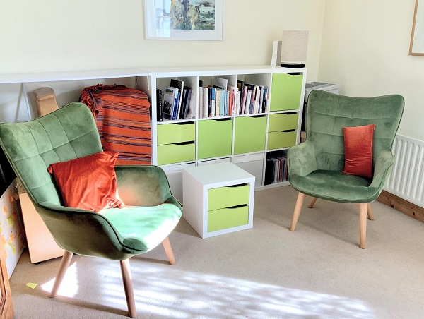

Meadow
Counselling & Psychotherapy
A safe place for listening and exploringPhone
083 4271161About Therapy
Being human is not easy. It can be challenging to find something safe to rely on to when so much changes, sometimes without warning.
Therapy provides a unique space to safely explore the painful parts of human experience, including difficulties with anxiety, depression or relationship issues, for example.
The process of therapy can give the support and safety needed to explore and understand your experience, and often to reframe the beliefs, feelings and behaviours of your lived experience, so that ultimately you suffer less.
About Colm
Colm O’Connell (MA Psychotherapy, MIAHIP, ICP, IFS-L1) is a psychotherapist in Dublin, and holds a Master's Degree in Integrative Psychotherapy. He has previously worked in a range of professional environments and projects in the voluntary sector.
He offers an integrative approach which utilises tools and insights from many fields including psychology, neurobiology, and the humanistic tradition to explore the many dimensions of being human, including the emotional, the physical, the spiritual and the relational.
He works with adults of all ages on matters such as self-esteem, depression, anxiety, trauma, spiritual crisis, relationship issues and the many manifestations of loss. He is an accredited member of the Irish Association of Humanistic and Integrative Psychotherapy.
Gallery

Opening Hours
Tuesday 12 - 9Wednesday 12 - 9
Thursday 12 - 9
Call 083 4271161 for an initial phone consultation (at no cost)